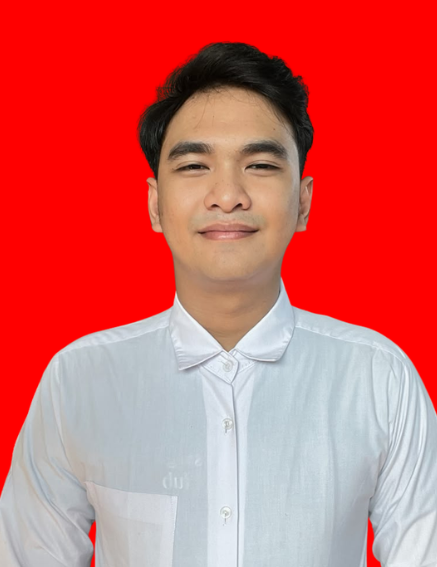
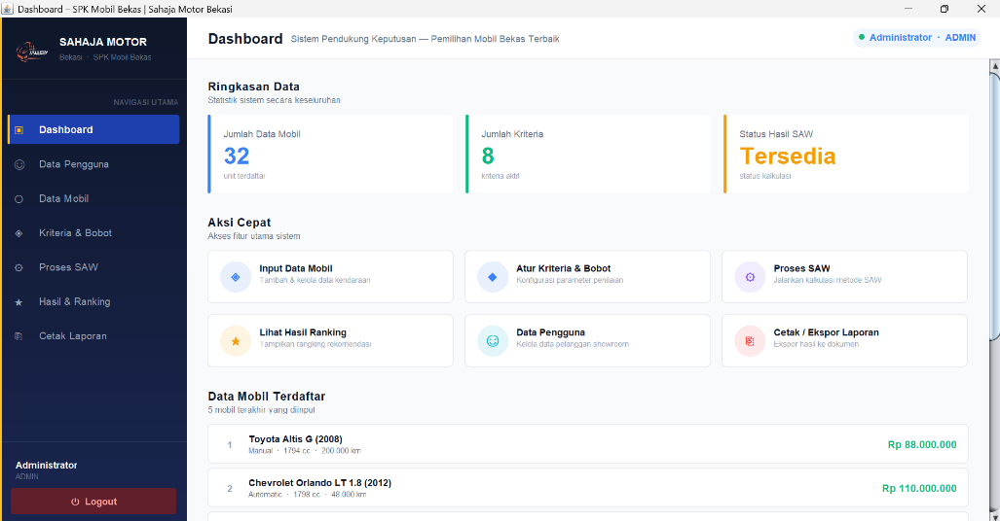
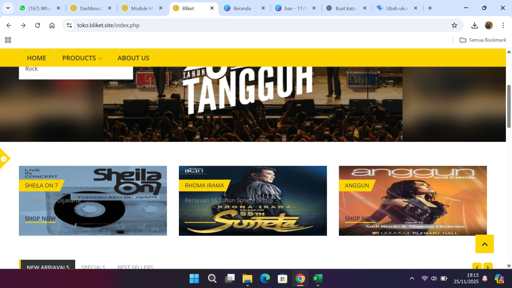

Halo, saya Rizki Ashar Siregar
Tentang saya
Sarjana Teknik Informatika dari Universitas Indraprasta PGRI dengan pengalaman dalam pengembangan aplikasi dan sistem berbasis teknologi informasi. Memiliki kemampuan dalam pengembangan sistem pendukung keputusan menggunakan metode SAW serta aplikasi berbasis Java dan MySQL. Didukung latar belakang SMK Teknik Komputer dan Jaringan, memahami pengembangan perangkat lunak dan dasar infrastruktur jaringan. Teliti, patuh terhadap prosedur, serta mampu bekerja secara individu maupun tim.

Pendidikan
Project

Aplikasi Pemilihan Mobil Bekas – Showroom Sahaja Motor, Bekasi
Java (NetBeans), MySQL
Mengembangkan aplikasi Sistem Pendukung Keputusan (SPK) menggunakan metode Simple Additive Weighting (SAW) untuk membantu konsumen memilih mobil bekas berdasarkan kriteria seperti harga, tahun, dan kondisi mobil. Aplikasi ini dirancang untuk menghasilkan rekomendasi mobil secara lebih efektif dan efisien dengan menggunakan Java (NetBeans) dan MySQL sebagai basis data.

Aplikasi Pemesanan Barang Dagangan (Merchandise)
Java (NetBeans), MySQL
Mengembangkan aplikasi berbasis Java untuk mengelola data barang, pengguna, supplier, transaksi, dan laporan secara terkomputerisasi. Aplikasi ini dirancang untuk mempermudah proses pencatatan, pengelolaan data, serta penyusunan laporan merchandise menggunakan Java (NetBeans) dan MySQL sebagai basis data.

Aplikasi Penjualan Tiket Konser Berbasis Web
PrestaShop
Mengembangkan website penjualan tiket konser menggunakan platform PrestaShop untuk menampilkan dan mengelola informasi tiket serta produk yang tersedia. Website ini dirancang untuk memudahkan pelanggan dalam melihat pilihan tiket dan melakukan pemesanan secara online dengan proses yang lebih praktis dan efisien.
Pengalaman kerja
Sept - Nov 2025
Java Developer
PT Empat Bintang Jaya Bersaudara
- Mengembangkan dashboard aplikasi untuk menampilkan informasi dan mendukung pemantauan data secara terstruktur.
- Membuat form pengelolaan data barang dan supplier untuk mempermudah proses input, penyimpanan, dan pembaruan data.
- Mengembangkan fitur transaksi untuk mendukung pencatatan dan pengelolaan aktivitas operasional.
- Membuat laporan sistem berdasarkan data yang tersimpan untuk mempermudah penyajian dan pemeriksaan informasi.
Feb 2021 - Apr 2021
Admin
PT Shabila Travel Bekasi
- Memeriksa kesesuaian isi dan kemasan paket berdasarkan SOP sebelum pengiriman untuk meminimalkan kesalahan dan kerusakan barang.
- Memastikan kondisi paket dalam keadaan baik serta sesuai dengan data pengiriman yang tercatat.
- Membuat dan mencetak bukti pengiriman berdasarkan data yang telah diverifikasi langsung dengan pengirim.
- Mengelola pencatatan barang masuk dan keluar antar cabang untuk memastikan data pengiriman tercatat dengan rapi dan akurat.